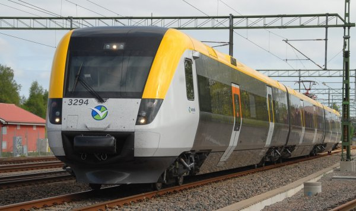

Min väg till skolan

Här får ni följa med mig till skolan från Kungsbacka till Uddevalla i tre steg:
- Bussen från Skördevägen till Kungsbacka station.
- Tåget från Kungsbacka station till Göteborg C.
- Tåget från Göteborg C till Uddevalla Östra.
Min dag börjar med att jag lämnar mitt hus som ligger i Tölö, går ner till busshållplatsen och hoppar på en buss som åker till Kungsbacka station . När jag kommer fram till Kungsbacka station, hoppar jag på tåget som tar mig till Göteborg C. När jag kommer fram till Göteborg C tar jag tåget till Uddevalla. När jag kommit fram till Uddevalla Östra , går jag sedan till skolan.